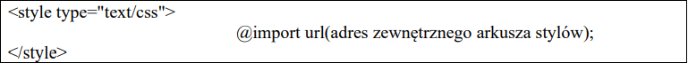

Sposoby podłączania styli do strony (skrócone zestawienie).
-
Zewnętrzny arkusz stylów
-
Styl lokalny inaczej: (styl wpisany, liniowy, linijkowy, w
linii) czyli dopisanie arkusza do wybranego bloku treści strony.
-
Wewnętrzny arkusz stylów.
-
Alternatywny arkusz stylów.
-
Import arkusza stylów.
